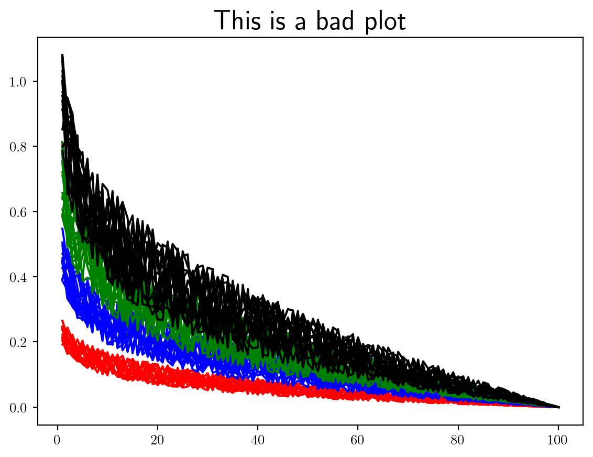
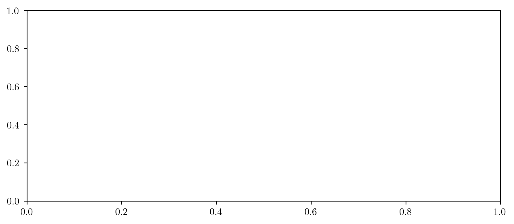
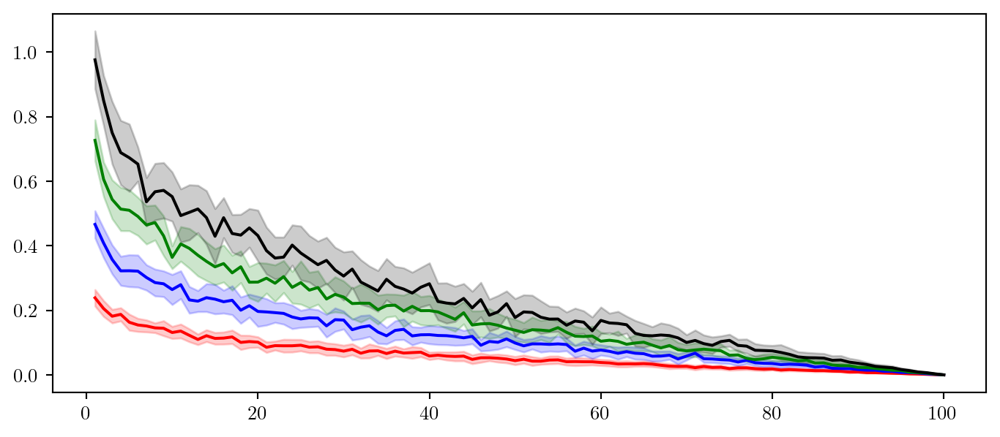
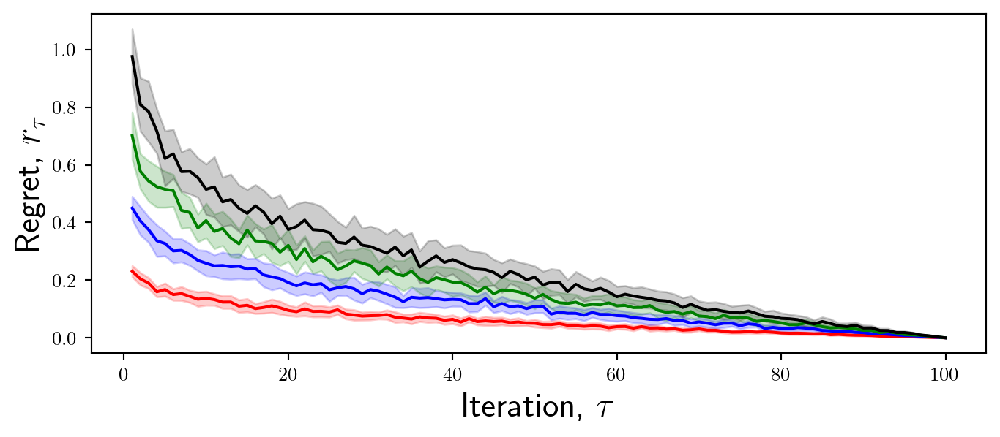
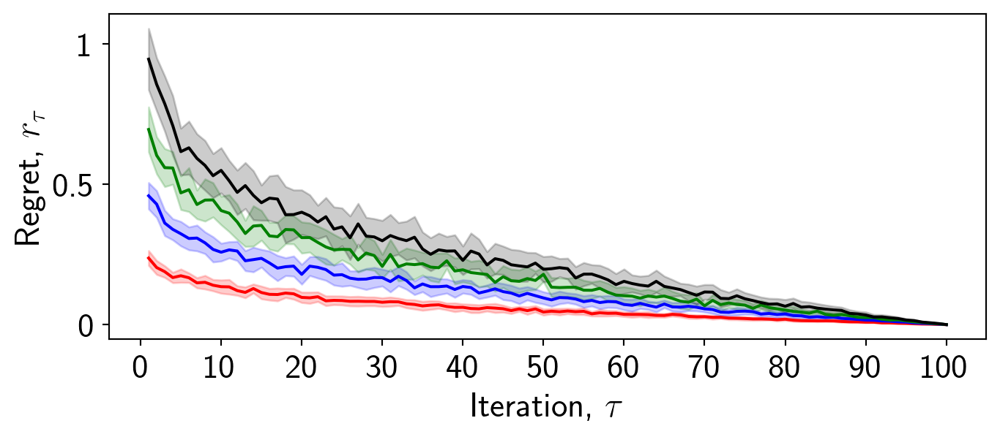
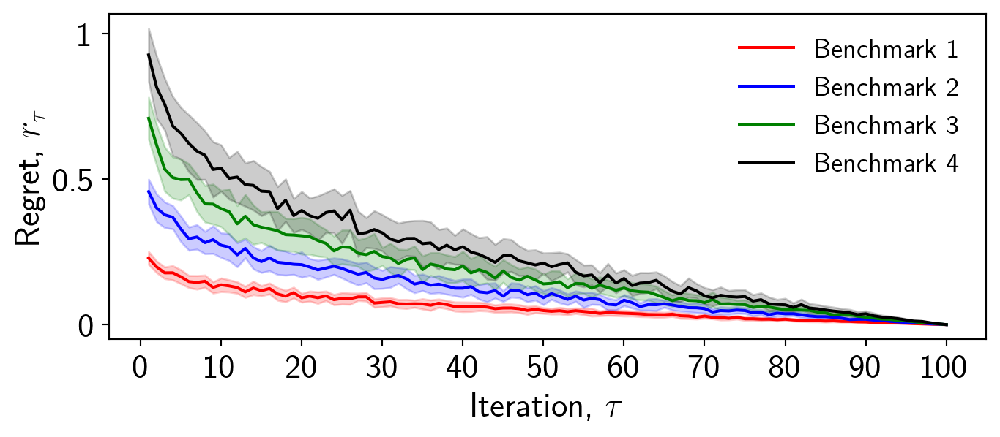
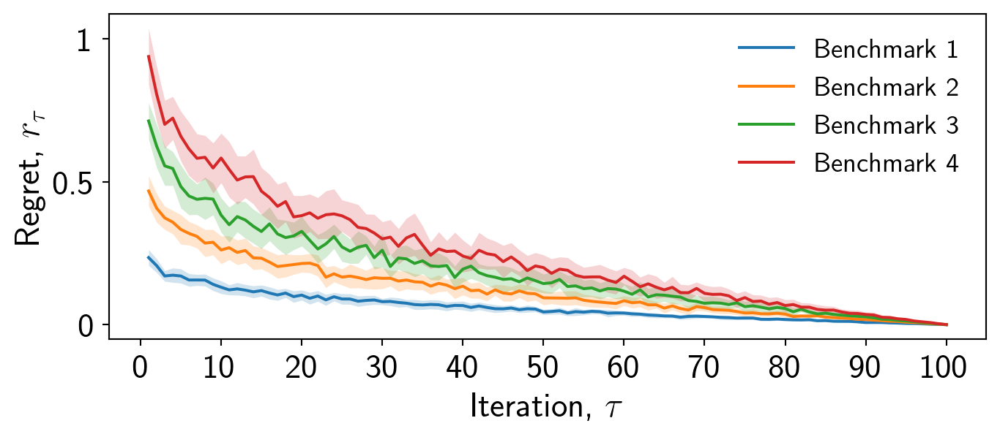
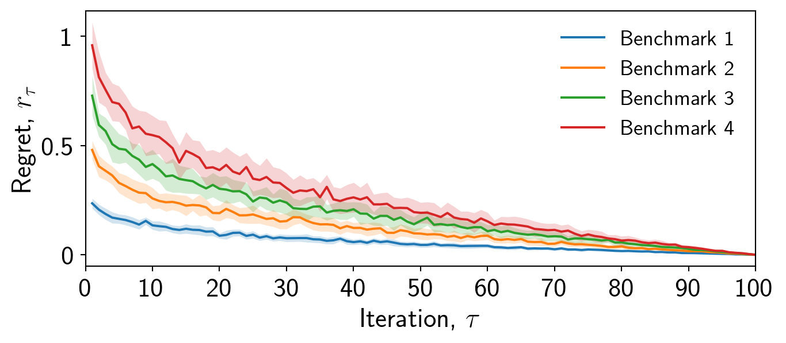
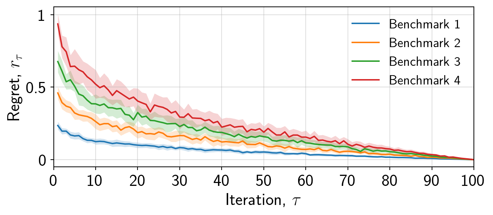
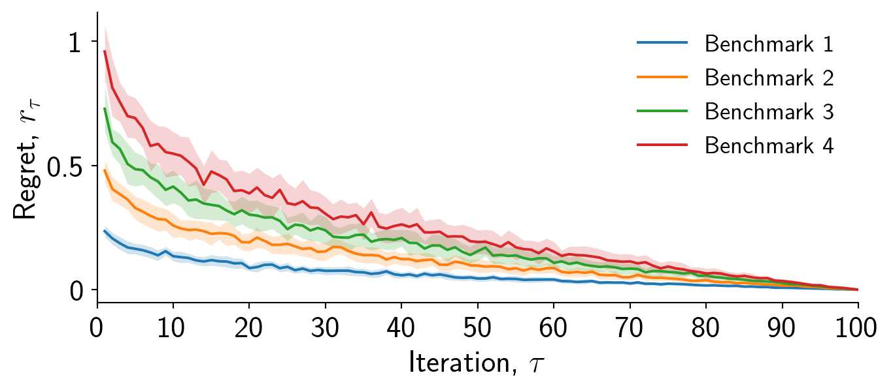

Here I will outline my personal preferences for best convergence plotting practices using Matplotlib.
Let’s start by plotting some convergence data in just about the worst way, and slowly improve on this. It is my view that when LaTeX is available you should always use it.
Always use the LaTeX extension to render figures by including plt.rcParams['text.usetex'] = True' at the top of your script.
Here I have simulated some convergence data where we have 4 different benchmarks, each containing 16 separate repeat runs.
Using plt.figure() makes it harder to interact with the axis (even if you only have a single axis), making it more difficult to adjust the size and layout.
Now we will initialise our plot correctly using the object-oriented syntax, sizing the figure appropriately for the given context. By constraining the layout we ensure that the figure fits within the given size.
Always initialise a plot using the object-oriented interface fig,ax = plt.subplots..., defining the figure size appropriately.
Never initialise a plot using the pyplot interface plt.figure....
fig,ax = plt.subplots(1,1,figsize=(7,3),layout="constrained")
Now we will draw our attention to plotting the data itself. It is important to think about what message you want to convey to the reader. Clearly providing each run for each benchmark is not useful. I will plot the mean and standard deviation of regret across each benchmark. I will use a line plot to convey the mean and a shaded region to convey the standard deviation.
Always ensure that the linewidth=... option is set appropriately, and more importantly consistently.
fig,ax = plt.subplots(1,1,figsize=(7,3),layout="constrained")
for b in range(benchmarks):
mean = np.mean(data[b,:,:],axis=0)
std = np.std(data[b,:,:],axis=0)
ax.plot(iterations,mean,color=cols[b])
ax.fill_between(iterations,mean-std,mean+std,alpha=0.2,color=cols[b])
plt.show()
Always separate your data generation and plotting code. This will make it easier to adjust the plot later. Save data at generation (for example during optimisation) and then load it in for plotting.
Now we have decided what specifically to plot and all the information we wish to present is here we can work on making the plot more interpretable.
We should first add some axis labels as follows. Ensure the font size is large enough to be legible. You can use LaTeX within labels by using $ $ as standard, when doing so include an r in front of the string to ensure it gets parsed appropriately.
Always choose a legible font size and text for axis labels, using LaTeX where appropriate.
ax.set_xlabel(r'Iteration, $\tau$',fontsize=18)
ax.set_ylabel(r'Regret, $r_\tau$',fontsize=18)
Now we will focus on the ticks. Ticks are important because they enable the reader to interpret the values of the data.
It is important to consider what tick values are appropriate to display. For example in this case, I want to convey to the reader the differences in overall convergence characteristics between these methods. Therefore, it may not be necessary to display intermediate regret values.
Always select appropriate tick values for your context, adjusting the fontsize as necessary.
x_ticks = [0,10,20,30,40,50,60,70,80,90,100]
y_ticks = [0,0.5,1]
ax.set_xticks(x_ticks,x_ticks,fontsize = 18)
ax.set_yticks(y_ticks,y_ticks,fontsize = 18)
Whilst it is important to provide a legend to ensure the reader can interpret the data, not everything has to have a label.
In this case I want to convey which color corresponds to which benchmark, but I also need to convey what the error bars mean. In order not to distract from the plot, I will choose to omit this from the plot itself and instead include it in the caption.
Including a label for the error bars does not contribute to the story and the message of the plot.
Always include labels for the relevant information, such as distinguishing between benchmarks. If the plot is too crowded place the legend outside of the plot.
Never overwhelm the reader with information and labels. Some information is fine to include within the caption, as the caption and the image are considered complimentary and dependent.
labels = [f'Benchmark {b}' for b in range(1,benchmarks+1)]
for b in range(benchmarks):
mean = np.mean(data[b,:,:],axis=0)
std = np.std(data[b,:,:],axis=0)
ax.plot(iterations,mean,color=cols[b],label=labels[b])
ax.fill_between(iterations,mean-std,mean+std,alpha=0.2,color=cols[b])
ax.legend(frameon=False,fontsize=14)
You will notice that I have chosen not to include the frame on the caption. This makes the plot look cleaner and less cluttered.
For scatter plots the frame can help distinguish between the data and the legend, but for line plots it may not be necessary.
When using fill_between a faint outline is drawn which can make the plot look cluttered, I always like to remove this by setting linewidth=0.
Always remove the linewidth of fill_between for a cleaner plot.
I always use and reccomend the tab: set of colours in Matplotlib. A number of people have put significant effort into choosing these so you don’t have to. Here is a list of examples that you can copy and paste.
These colours are softer than the default colours and are more aesthetically pleasing.
cols = ['tab:blue','tab:orange','tab:green','tab:red',\
'tab:purple','tab:brown','tab:pink','tab:gray','tab:olive','tab:cyan']
for b in range(benchmarks):
mean = np.mean(data[b,:,:],axis=0)
std = np.std(data[b,:,:],axis=0)
ax.plot(iterations,mean,color=cols[b],label=labels[b])
ax.fill_between(iterations,mean-std,mean+std,alpha=0.2,color=cols[b],linewidth=0)Always use the tab: set of colours over the default colours.

Now we can adjust the axis limits to ensure that the data is placed appropriately. In this case, the regret values are fine but the iterations should start at 0 and end at 100.
ax.set_xlim([0,100])Always adjust the axis limits appropriately. The x-axis particularly may be too large.

Finally, it is important to consider whether a grid is appropriate. In this case I will for demonstration, but it may be distracting. I will adjust the transparency to make it less pronounced.
ax.grid(alpha=0.4)Always consider using ax.grid() if the individual values of the data are important.

If you choose not to use a grid, then I always prefer if the right and top axis are removed, resulting in a cleaner plot.
ax.spines['right'].set_visible(False)
ax.spines['top'].set_visible(False)Always remove the right and top axis if you choose not to use a grid.

That is just about it for this plot. Always to remember to save figures as .svg or .pdf. If you require a .png then use the dpi= option in fig.savefig to increase the resolution.
Always save your figure as .svg or .pdf.
fig.savefig('results.svg')Finally, read the documentation!.